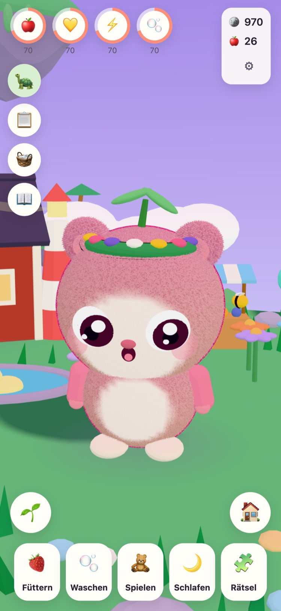
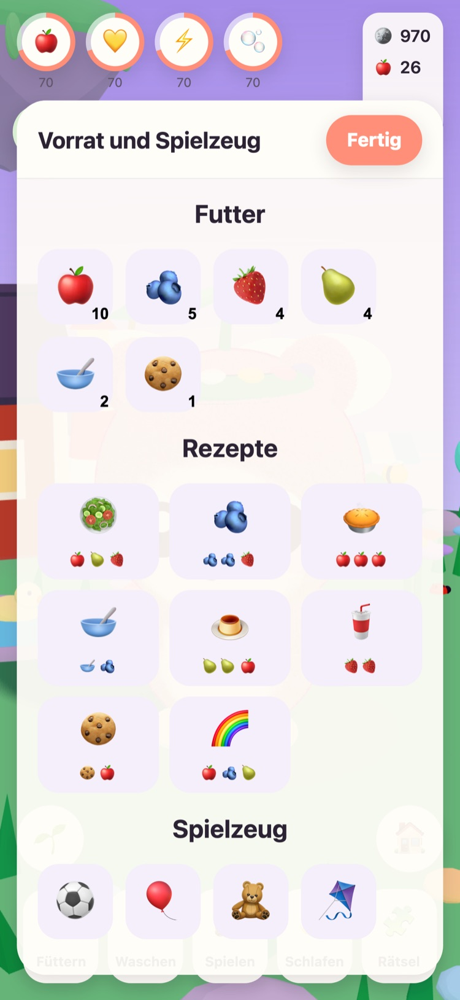
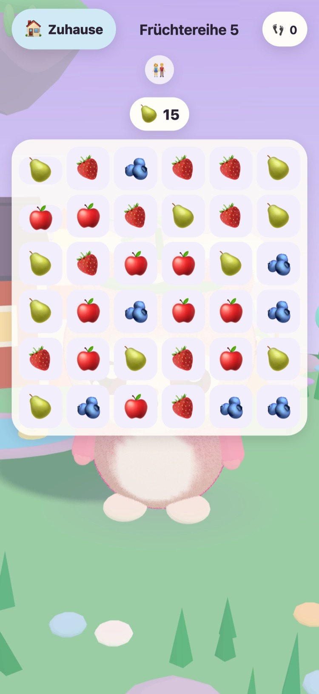
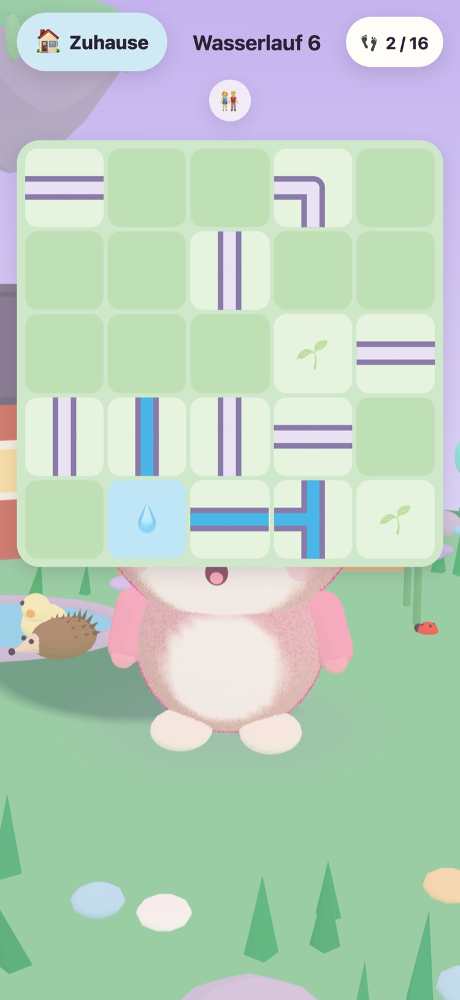
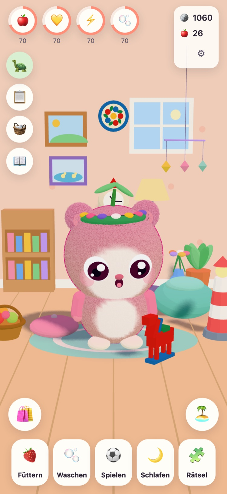
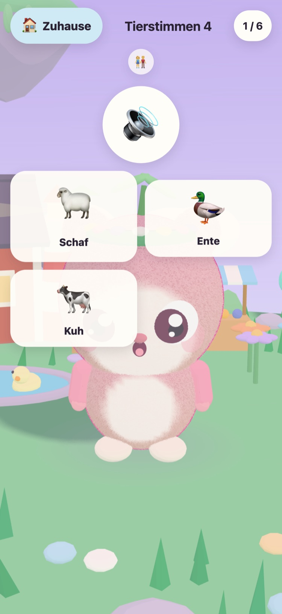

JUNOLittle Worlds
Lass ein Juno schlüpfen, kümmere dich darum und löse sanfte Rätsel, die eine schwebende Insel aufwecken. Ein ruhiges Spiel für Kinder von 6 bis 10 Jahren, auf iPhone und iPad.
Hallo! Ich habe drei warme Eier gefunden. Welches gehört dir?
- Keine Werbung
- Kein Tracking
- Kein Konto
- Keine Timer, kein Druck






Ein ganz eigener kleiner Freund
Opa Tintin, die alte Schildkröte, die sich um die Wieseninsel kümmert, hat drei warme Eier gefunden. Dein Kind sucht sich eines aus und gibt dem, was schlüpft, einen Namen. Von da an gehört das Juno ganz ihm: zum Füttern, Waschen, Spielen und Hinlegen für ein Nickerchen.
-
Wähle ein Ei
Drei warme Eier, drei Farben. Dein Kind wählt eines und sieht zu, wie es schlüpft.
-
Gib ihm einen Namen, hab es lieb
Füttern, waschen, spielen und schlafen. Das Juno zeigt, wie es sich fühlt, und wächst mit eurer Freundschaft.
-
Weck die Insel auf
Jeder Stern aus einem Rätsel bringt Licht zurück auf die Wieseninsel, bis Blumen, Bienen und Enten wieder zu Hause sind.
Füttern, waschen, spielen, schlafen
Verschiedenes Essen und Spielzeug, Seifenblasen beim Baden und ein Juno, das zeigt, wie es sich fühlt. Die Bedürfnisse sinken langsam und nie auf null, deshalb geht ein Juno nie verloren.
57 sanfte Rätsel
Früchtereihe, Memo-Garten sowie Tierstimmen und Fahrzeuggeräusche mit echten Aufnahmen. Sterne gibt es für Züge, nie für Zeit, und ein neuer Versuch ist immer kostenlos.
Eine Insel, die aufwacht
Der Blumengarten öffnet sich mit Bienen, der Ententeich füllt sich mit Wasser und Enten, und in den Gartenbeeten wachsen aus Samen Äpfel und Erdbeeren.
Ein Zimmer zum Gemütlichmachen
Mit Münzen aus Rätseln und den Aufgaben des Tages gibt es Dekorationen für das Zimmer des Junos und Kleidung zum Anziehen. Nichts im Münzladen kostet echtes Geld.
Alles wird vorgelesen
Opa Tintin liest jede Zeile mit seiner eigenen warmen Stimme vor, für Kinder, die noch nicht lesen können. Tippe ihn an, um es noch einmal zu hören.
Ein Elternbereich
Hinter einer Elternsperre: Sprache, Vorlesen, Töne, Schlafenszeit und eine sanfte Pausen-Erinnerung. Zur Schlafenszeit schläft das Juno, und die Rätsel warten bis zum Morgen.
Spricht 21 Sprachen
Opa Tintin spricht mit deinem Kind in dessen eigener Sprache. Wähle eine im Elternbereich, oder lass das Spiel dem Gerät folgen.
English Svenska Dansk Norsk Suomi Deutsch Nederlands Français Español Italiano Português (Brasil) Polski Русский Ελληνικά Türkçe Bahasa Melayu Kiswahili हिन्दी 日本語 한국어 简体中文
Von einem Großvater gemacht
JUNO wurde in Schweden von einem Großvater für seine Enkelin gemacht: ein Spiel, bei dem er sie gern spielen sieht. Opa Tintin, die Schildkröte im Spiel, ist er selbst.
Deshalb sind die Regeln einfach. Nichts, was Druck macht, nichts, was trickst, und nichts, was irgendetwas über dein Kind sammelt.
Kostenlos, ohne Werbung
JUNO ist kostenlos zum Herunterladen und hat keine Werbung, kein Tracking und kein Konto. Alles, was dein Kind tut, bleibt auf deinem Gerät. Mehr dazu auf der Datenschutzseite.
Ein Erwachsener kann JUNO Plus oder das Winterpaket im Elternbereich kaufen, hinter der Elternsperre. Beides sind einmalige Käufe, die du wiederherstellen und mit deiner Familie teilen kannst.